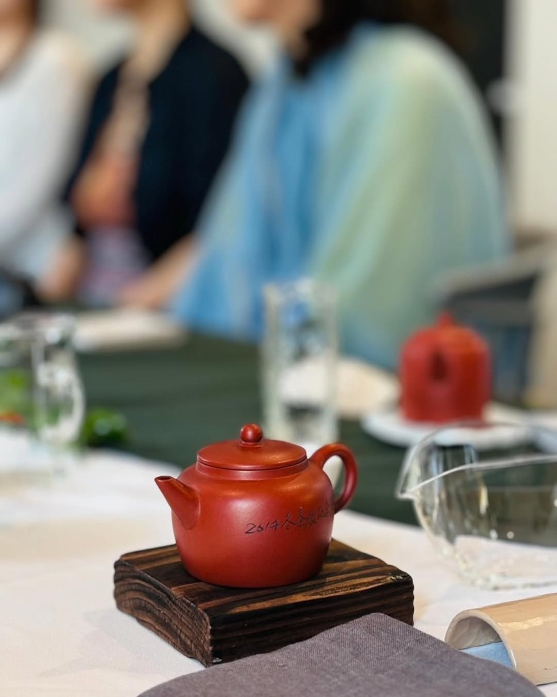
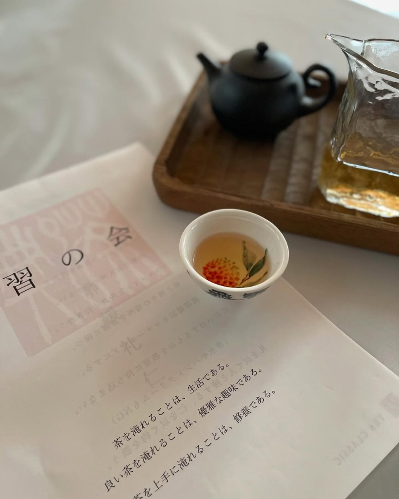
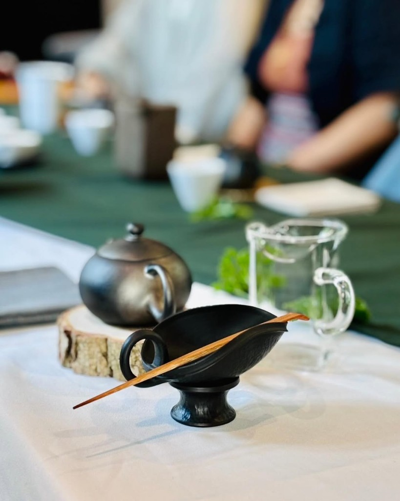
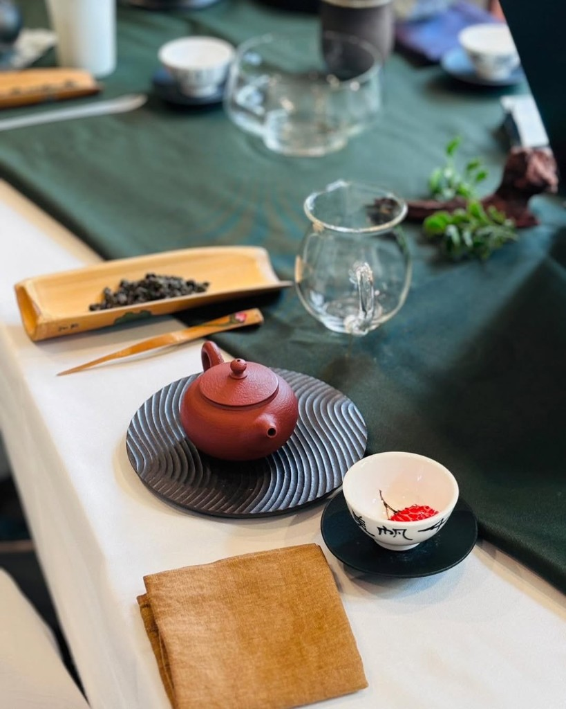
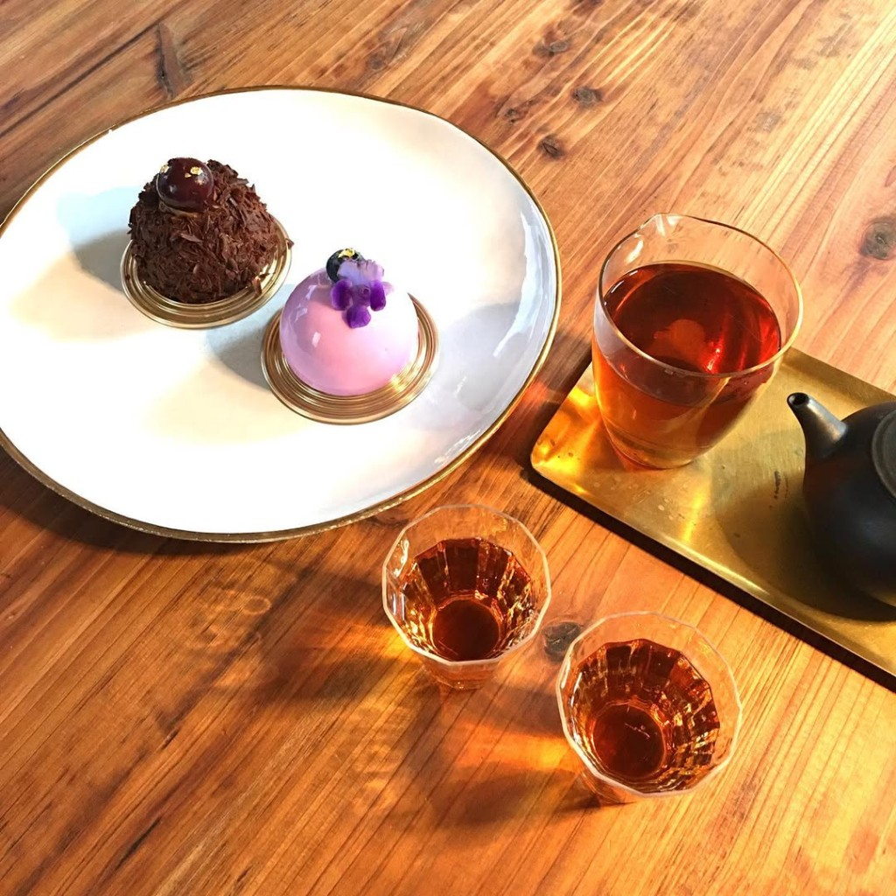
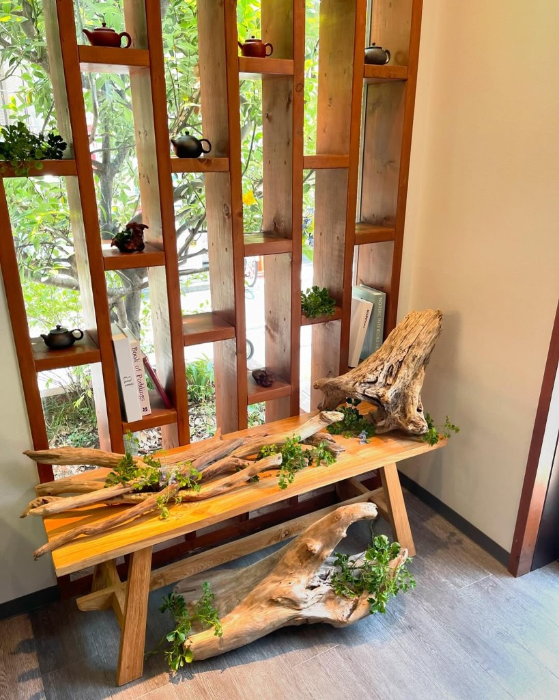

具材がぎっしり詰まった広島風お好み焼きを食べたい方
観光協会推奨店の本場の横手やきそばを味わいたい方
ランチや仕事帰りの一杯に気軽に立ち寄りたい方
気兼ねなく立ち寄れる空間で、
皆様のお越しをお待ちしております。
秋田県横手市田中町に位置するあつあつ亭は、横手駅前にある創業26年の鉄板焼き食堂です。
名物の広島風お好み焼きや横手風お好み焼き＆横手やきそば暖簾会加盟店として提供する横手やきそばなど、鉄板で焼き上げるアツアツの料理をご提供しています。
お一人様からご家族連れまで気兼ねなくご利用いただけます。

うまいもんで
みんな元気に
OUR SPECIALITY

キャベツやたっぷりの海鮮、カリッカリの豚肉、薄味に調整された焼きそばなどの具材がぎっしり詰まった一品です。
お客様が自分で焼くのではなく、スタッフが目の前の鉄板で焼いて仕上がったアツアツの状態でテーブルへお届けします。

一般社団法人横手市観光協会の推奨店に選ばれた横手やきそばをご提供しています。
太い中華麺に、ウスターソースをベースとして鰹や昆布の魚介ダシで割ったさらっとした和風ソースを絡めた一品で、全国各地から訪れる食通をうならせる味わいです。

米粉を使用したお好み焼き「横手焼き」（650円）や「横巻き」（600円）のほか、各種焼きそば・焼うどん、夜限定の一品料理（100円〜）まで豊富にご用意しています。
ランチ営業はもちろん仕事帰りの一杯にも最適です。

